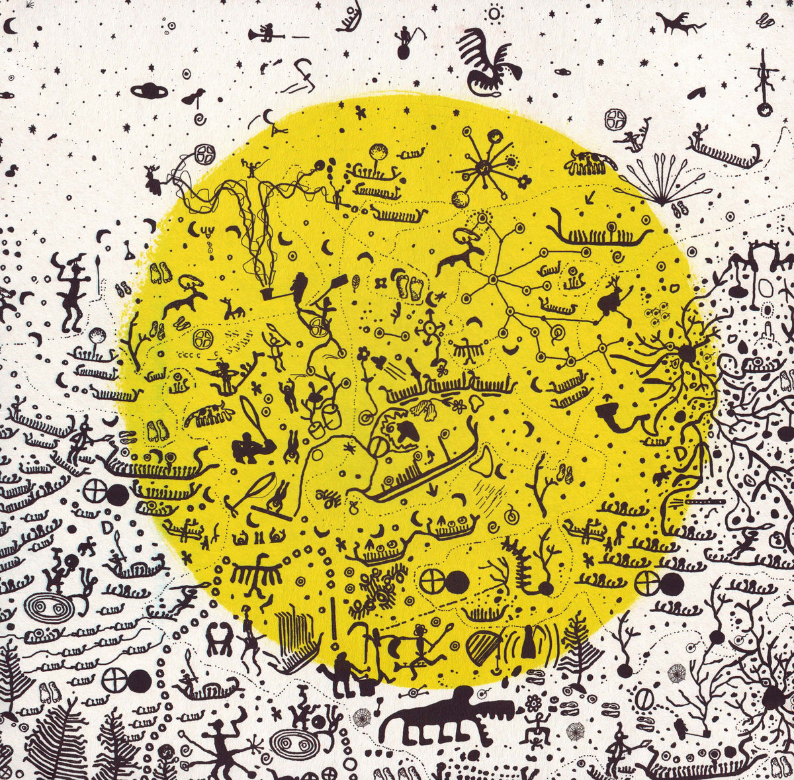

Frisk Frugt - Guldtrompeten
Released on vinyl in 2006
side a
1. Isabella Rosselini uden at vide det 6:30 min.
2. Yes, nu skal vi ud i bilen og vi bestemmer selv hvad vi må 1:43 min.
3. Josef og fuglene 7:51 min.
4. Uglerunde øjne sået til med sære syn 2:29 min.
5. Et eventyrligt blomsterrige 3:20 min.
side b
6. Lindholm Høje 0:52 min.
7. Love begins in sesamfrø 5:26 min.
8. Appelsinoutro 0:33 min.
9. Carlo 4:34 min.
10. Et uforskammet kaos 2:33 min.
11. Guldtrompet 3:56 min.
Credits
released July 1, 2006
Optaget i yoyooyoy tonstudie og lasdehner str. 32 i Berlin 2006
Anders Lauge Meldgaard - guitar, saxofon, bas, tangenter, trommer, perc., fløjte, reallyde og vokal.
Johs. Lund - sopransaxofon på nr. 3
Morten Svenstrup - cello på nr. 9
Musik og tekst af Anders Lauge Meldgaard
Produceret af Frisk Frugt
Mastereret af A.L.Meldgaard
Cover i samarbejde med Morten Bak